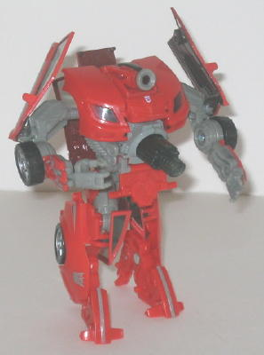
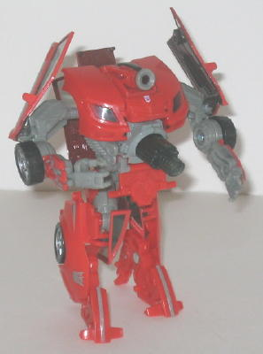

Swindle
(Movie)
Swindle
(Movie)
 

Swindle's vehicle mode
is based off of the Chevrolet Cobalt car model. As far as proportions go,
this mode is fairly accurate, though the top part of the car (the windows
and the roof) could stand to be a bit larger proportionally. There's also
a really cool gimmick available in this mode-- push on the small green
tab on the rear windows, and a large exhaust pipe pops out of the back
end! It's pretty cool, serves a functional purpose (to make Swindle "go
faster"), and best of all, neither mode suffers from it. Unfortunately,
the flap that covers it that makes up the rear part of the car is REALLY
loose in both modes, and doesn't really lock in anywhere, so it tends to
flop around everywhere when you're playing with him-- it's definitely Swindle's
most annoying downside, especially in robot mode when it's on his waist.
Overall, though, Swindle's car mode is pretty boring. The light red color
scheme doesn't look all that great (a metallic shade would have looked
better), and there's very little paint OR mold detailing in this mode to
look at. The silver details on the doors help a little, but not much. Swindle
does have transparent windows, but it's the kind I don't like-- the transformation
doesn't allow for an authentic interior, so you can see Swindle's robot
parts all crowded up inside there (though otherwise, he has no robot extras
in this mode). In cases like these, I think it'd be better if the windows
were just painted silvery blue or something instead.
Swindle in robot mode
is infinitely more interesting. His color scheme is still rather dull,Â
but at least the gray helps to break things up a little. His proportions
are pretty good, though his feet look rather skinny from a straight-on
view. (The construction and transformation of the legs is quite creative,
though.) His mold detailing on his robot parts is very good, especially
on the sides of his chest, where pistons and shock-absorbing springs and
all that good stuff can be seen. His exhaust pipe gimmick in vehicle mode
now becomes an impressive stomach cannon, giving him the required big blaster
that any good Decepticon needs. His few vehicle extras, like the hood of
his car mode, fit in with the overall form of the look for the most part
and don't hinder articulation, so I don't mind them-- except for the doors
on his elbows, which I feel could have looked much better if they were
attached closer to his shoulders. Given that he's a toy based off of a
Decepticon drone in the
Movie video game
,
Swindle has the standard "drone head" of a single large optic with no other
particularly notable features on it. I don't mind the head design, but
Swindle REALLY needs a neck-- it just barely pokes out of his chest, there.
Swindle's shoulders are also lower than they should be in this mode, and
there's a bit of a gap between where shoulders and the sides of the body,
which I think is Swindle's biggest problem in this mode. Another, more
minor, downside to this mode is that there's no real "locking position"
for his chest and midsection-- they tend to slide against each other a
bit because of this, though it's no huge deal, he still looks solid there
regardless. Swindle's articulation is decent, but a bit below-average for
a toy of his size-- he can move at the shoulders, waist, the elbows, the
wrists, the hips, the knees, the ankles, and SLIGHTLY at the head. This
doesn't sound too bad, but his ankle, elbow, and knee articulation can
only move back-and-forth, without any side-to-side movement, which rather
limits the poses he can strike.
Swindle isn't the best
of the Movie deluxes by a long shot, but he's defintely not the worst either--
he still has some cool features like his stomach cannon/exhaust pipe and
his unique transformation and robot mode design. His vehicle mode and color
scheme are pretty boring, though, and although none of his flaws are particularly
crippling, there are a few of them and they do add up.
Review by Beastbot